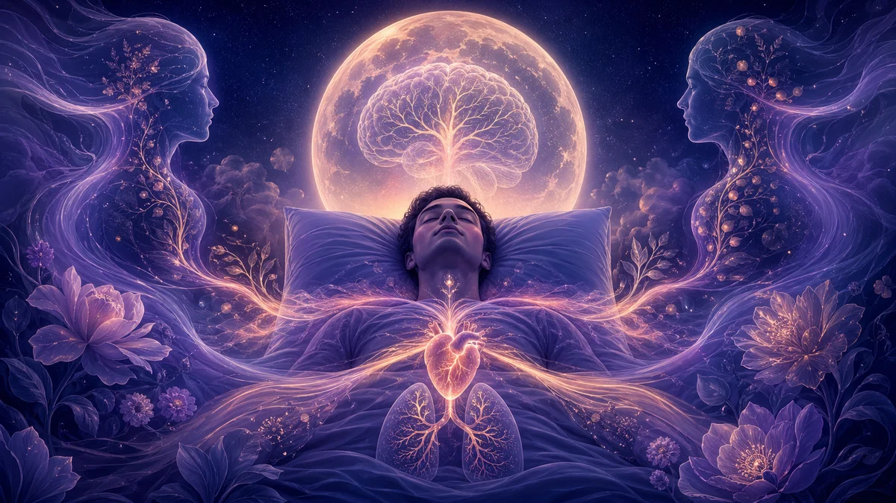

El sueño, tu principal palanca de salud: el estudio OHSU que lo cambia todo
Pasamos un tercio de la vida durmiendo, pero rara vez tratamos el sueño con la misma seriedad que la alimentación o el ejercicio. Un estudio longitudinal de la Oregon Health & Science University ha sacudido la jerarquía de los factores de salud al demostrar que la falta de sueño acorta la esperanza de vida más que la inactividad física o una dieta deficiente. Solo el tabaco resulta más dañino. En este artículo analizamos los hallazgos del estudio, lo que la privación de sueño provoca en el cerebro, cómo el sueño REM procesa las emociones, de qué manera tus sueños pueden alertarte y qué estrategias prácticas puedes adoptar para priorizar tu descanso.
Este artículo tiene fines informativos únicamente y no constituye asesoramiento médico. Consulte a un profesional de la salud para cualquier preocupación relacionada con el sueño.
Respuesta rápida
Un estudio de la OHSU con más de 30 000 participantes seguidos durante décadas demostró que dormir menos de siete horas por noche reduce la esperanza de vida más que la falta de ejercicio o una mala alimentación. Solo el tabaquismo tiene un impacto mayor. El sueño insuficiente deteriora el cerebro, altera el procesamiento emocional del REM, provoca sueños más intensos o perturbadores y multiplica los riesgos cardiovasculares y metabólicos. Priorizar el sueño es la intervención de salud más rentable que existe.

El estudio OHSU: el sueño como factor de supervivencia
En 2024, un equipo de la Oregon Health & Science University publicó los resultados de un estudio longitudinal que siguió a más de 30 000 adultos durante varias décadas. El objetivo era comparar el impacto relativo de los principales factores de estilo de vida — sueño, actividad física, alimentación, consumo de alcohol y tabaco — sobre la mortalidad por todas las causas. Los resultados desafiaron la narrativa convencional que sitúa la dieta y el ejercicio en la cima de la pirámide de salud.
Los participantes que dormían sistemáticamente menos de siete horas por noche presentaban un riesgo de mortalidad prematura significativamente superior al de aquellos con baja actividad física o hábitos alimentarios deficientes. La única variable que superó al sueño insuficiente en impacto negativo fue el tabaquismo activo. Dicho de otro modo: si no fumas, la calidad de tu sueño es el factor modificable que más influye en cuántos años vivirás y cómo los vivirás.
El estudio controló variables demográficas, socioeconómicas y de salud preexistente, lo que refuerza la solidez de la conclusión. No se trata de correlación espuria: la privación crónica de sueño acelera el deterioro del organismo por múltiples vías simultáneas, lo que explica su peso desproporcionado en la ecuación de la longevidad.
La jerarquía de los factores de salud
Por qué el sueño supera a la dieta y al ejercicio
La alimentación y el ejercicio actúan sobre sistemas específicos: el metabolismo, la masa muscular, la salud cardiovascular. El sueño, en cambio, es transversal. Durante las siete u ocho horas de descanso nocturno, el cuerpo ejecuta simultáneamente la reparación celular, la consolidación de la memoria, la regulación hormonal, la modulación inmunitaria y la limpieza de desechos metabólicos cerebrales. Cuando este proceso se interrumpe o se acorta, cada uno de estos sistemas se deteriora al mismo tiempo.
El estudio OHSU reveló un efecto dosis-respuesta claro: cada hora de sueño perdida por debajo de las siete horas recomendadas incrementaba el riesgo de mortalidad de forma no lineal, con una aceleración marcada por debajo de las seis horas. Este umbral crítico sugiere que el organismo tolera un déficit leve, pero carece de mecanismos de compensación eficaces frente a la privación moderada o severa.
El tabaco como único rival
Que solo el tabaco supere al sueño insuficiente no es trivial. El tabaquismo causa daño directo y acumulativo en los tejidos pulmonares y vasculares. El sueño insuficiente, aunque no destruye tejidos de forma directa, socava los procesos de reparación y regulación que mantienen al organismo funcional. Es una forma de deterioro por omisión: no es lo que haces, sino lo que tu cuerpo no puede hacer cuando le privas de sueño.
Lo que la falta de sueño provoca en el cerebro
El sistema glinfático y la limpieza cerebral
Descubierto en 2012, el sistema glinfático es una red de canales que rodea los vasos sanguíneos cerebrales y que se activa principalmente durante el sueño profundo de ondas lentas. Su función es eliminar los productos de desecho del metabolismo neuronal, incluidas proteínas como la beta-amiloide, asociada a enfermedades neurodegenerativas. Cuando el sueño se acorta, el sistema glinfático no dispone del tiempo necesario para completar este proceso de limpieza, y los desechos se acumulan progresivamente.
Estudios de neuroimagen han demostrado que una sola noche de privación total de sueño aumenta los niveles de beta-amiloide en el cerebro humano. La privación crónica, incluso parcial, podría acelerar la acumulación de estas proteínas durante años, contribuyendo al riesgo de deterioro cognitivo a largo plazo. Este hallazgo ha transformado la comprensión médica del sueño: no es un período de inactividad, sino un mantenimiento crítico del órgano más complejo del cuerpo.
Corteza prefrontal y toma de decisiones
La corteza prefrontal — sede del razonamiento, la planificación y el control de impulsos — es especialmente vulnerable a la falta de sueño. Con solo una noche de sueño insuficiente, la capacidad de evaluar riesgos se reduce, la impulsividad aumenta y la flexibilidad cognitiva disminuye. Cuando la privación se cronifica, estos déficits se estabilizan y la persona deja de percibirlos como anormales: el cerebro se adapta subjetivamente a un rendimiento inferior, creando una ilusión de normalidad que el estudio OHSU vincula directamente con peores resultados de salud.
Sueño REM y procesamiento emocional
El terapeuta nocturno
El sueño REM no solo genera los sueños más vívidos: cumple una función crítica de procesamiento emocional. Durante esta fase, la amígdala se reactiva para procesar experiencias emocionales del día, pero en un entorno químico especial: la noradrenalina — la molécula del estrés — está prácticamente ausente. Esto permite revivir emociones difíciles sin la respuesta fisiológica de estrés asociada, lo que equivale a una forma natural de terapia de desensibilización.
Cuando el sueño se reduce, las fases de REM — que se concentran en la segunda mitad de la noche — son las primeras en sacrificarse. El resultado es una acumulación de material emocional no procesado que se manifiesta como reactividad emocional aumentada, irritabilidad, ansiedad y una percepción distorsionada de las amenazas sociales. Investigaciones de Walker y colaboradores han demostrado que una noche sin REM suficiente puede amplificar la respuesta de la amígdala a estímulos neutros en más de un 60 %.
La fragmentación del sueño como factor agravante
No basta con acumular horas en la cama: la continuidad del sueño es igualmente crítica. El sueño fragmentado — despertares nocturnos frecuentes, incluso breves — impide completar ciclos completos de 90 minutos y reduce desproporcionadamente el tiempo en REM y en sueño profundo. El estudio OHSU encontró que la calidad del sueño, no solo la cantidad, era un predictor independiente de mortalidad.
Cuando tus sueños te alertan
El rebote REM como señal de alarma
Cuando acumulas privación de sueño, tu cerebro reacciona modificando la arquitectura del descanso. El fenómeno de rebote REM — un aumento compensatorio de la duración y la intensidad del sueño REM — produce sueños extraordinariamente vívidos, emocionales y a menudo perturbadores. Si has notado que tus sueños se han vuelto más intensos, extraños o cargados de imágenes nocturnas, tu cerebro podría estar enviando una señal clara de que no descansas lo suficiente.
Pesadillas recurrentes y estrés acumulado
Las pesadillas no son solo el producto de una mala noche: pueden reflejar un déficit crónico de procesamiento emocional. Cuando el REM se acorta noche tras noche, las emociones no procesadas se acumulan y emergen con fuerza cuando el cerebro finalmente tiene oportunidad de entrar en REM prolongado. El resultado son sueños de contenido emocional negativo intenso — persecuciones, pérdida de control, escenarios catastróficos — que funcionan como un indicador indirecto de la salud de tu sueño. Un diario de sueños puede convertirse en una herramienta de autodiagnóstico sorprendentemente precisa.
Estrategias para priorizar el sueño
Proteger las siete horas no negociables
El hallazgo central del estudio OHSU se traduce en una prescripción clara: siete horas de sueño continuo es el umbral mínimo para evitar los riesgos acelerados de mortalidad. Esto implica tratar la hora de acostarse con la misma seriedad que una cita médica — no como algo flexible que se ajusta según la agenda. Calcular la hora de acostarse en función de la hora de despertar, no al revés, es el primer cambio de paradigma.
Optimizar la arquitectura del sueño
La calidad importa tanto como la cantidad. Un dormitorio oscuro, fresco (18-20 °C) y silencioso favorece el sueño profundo de ondas lentas. Reducir la exposición a pantallas una hora antes de dormir protege la producción de melatonina. Evitar la cafeína después de las 14:00 — dado que su vida media es de 5 a 7 horas — previene interferencias con la fase de inicio del sueño. Y mantener un horario regular, incluso los fines de semana, elimina el jet lag social que desincroniza el ritmo circadiano.
Utilizar los sueños como indicador de salud
Si tus sueños se han vuelto más intensos, frecuentes o emocionalmente cargados, presta atención. Registrarlos en un diario de sueños — idealmente por voz, al despertar — te permite detectar patrones de rebote REM y correlacionarlos con tus hábitos de descanso. Un cambio sostenido en la calidad onírica suele preceder a los síntomas físicos de la privación. Escuchar a tus sueños es, literalmente, escuchar a tu cuerpo.
Revisar las prioridades
La cultura contemporánea glorifica la productividad a costa del sueño. Pero el estudio OHSU invierte la ecuación: sacrificar sueño para ganar tiempo es una inversión con rendimiento negativo. Las horas ganadas se pagan con menor rendimiento cognitivo, mayor reactividad emocional, peor salud metabólica y, en última instancia, con menos años de vida. Priorizar el sueño no es un lujo, sino la decisión de salud más eficiente y accesible que cualquier persona puede tomar.
Preguntas frecuentes
¿Por qué el sueño es más importante que la dieta o el ejercicio para la salud?
Un estudio longitudinal de la OHSU con más de 30 000 participantes demostró que dormir menos de siete horas por noche reduce la esperanza de vida más que la inactividad física o una alimentación deficiente. El sueño afecta simultáneamente al sistema cardiovascular, al metabolismo, a la inmunidad y a la función cerebral, lo que le confiere un impacto acumulativo superior al de cualquier otro factor de estilo de vida salvo el tabaco.
¿Qué le ocurre al cerebro cuando no dormimos lo suficiente?
La privación de sueño deteriora la corteza prefrontal, reduciendo la capacidad de decisión y el control emocional. El sistema glinfático, que limpia los desechos metabólicos cerebrales durante el sueño profundo, no puede operar correctamente, lo que favorece la acumulación de proteínas asociadas al deterioro cognitivo a largo plazo.
¿Pueden los sueños alertar sobre problemas de salud relacionados con el sueño?
Sí. Un aumento súbito en la intensidad, viveza o contenido emocional negativo de los sueños puede indicar un rebote REM causado por privación acumulada. Llevar un diario de sueños permite detectar estos patrones antes de que los efectos sobre la salud se agraven.
Fuentes / Lecturas adicionales
- OHSU (2024): Sleep duration and all-cause mortality: a systematic review and meta-analysis (Sleep Medicine Reviews)
- Fultz et al. (2019): Coupled electrophysiological, hemodynamic, and cerebrospinal fluid oscillations in human sleep (Science)
- Walker & van der Helm (2009): Overnight therapy: the role of sleep in emotional brain processing (Psychological Bulletin)
- Van Dongen et al. (2003): The cumulative cost of additional wakefulness (Sleep)
- Xie et al. (2013): Sleep drives metabolite clearance from the adult brain (Science)
Actualizado el 24 de marzo de 2026
Explorar símbolos relacionados
Explora los símbolos mencionados en este artículo:
Leer a continuación
Recursos relacionados sobre el mismo tema
Deuda de sueño y privación crónica: cómo afectan tu salud y tus sueños
Descubre qué es la deuda de sueño, cómo se acumula y las estrategias para recuperar un descanso reparador.
Ciencia del sueñoSueño REM y sueños: entendiendo el reinicio nocturno de tu cerebro
Descubre cómo la fase REM moldea tus sueños y por qué es esencial para tu bienestar.
RecursosVer todos los recursos
Explora nuestra colección completa de artículos sobre sueños, sueño y bienestar.